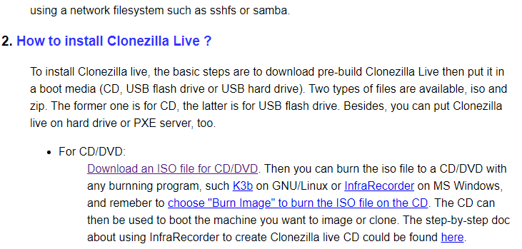
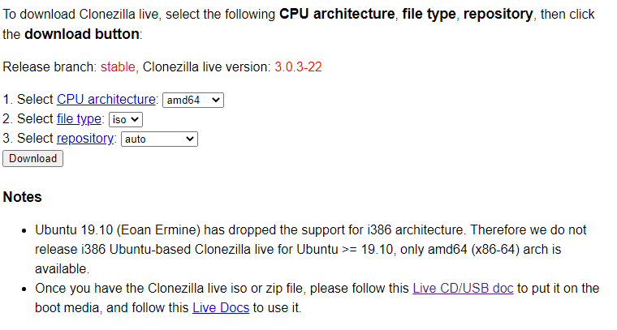
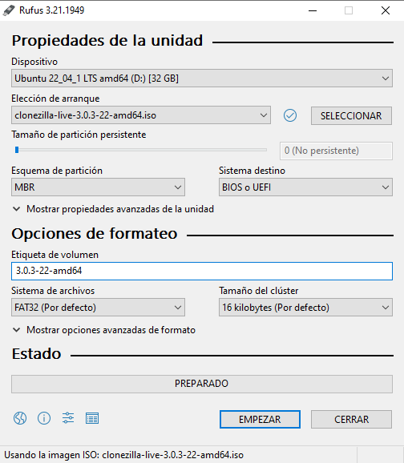

El primer paso, será realizar la instalación de clonezilla en un USB o cualquier memoria similar
Clonezilla es una aplicación gratuita que nos permite tanto clonar, como posteriormente recuperar la información
En primer lugar, iremos a su página web
Seleccionamos clonezilla live, bajamos un poco y entramos al link correspondiente a la iso

En tipo de archivo, seleccionamos ISO. La configuración debe de quedar como se muestra en la imagen.

Finalmente descargamos el archivo.
En este momento, lo siguiente que necesitamos es una aplicación que nos permtia montar la imagen de clonezilla en un USB
En este tutorial utilizaremos rufus, aunque puedes usar el que mas gustes
Seleccionamos el archivo descargado de clonezilla, y le damos a empezar, tal como se muestra en la imagen

Con esto, ya tendremos nuestro pendrive listo para usarse